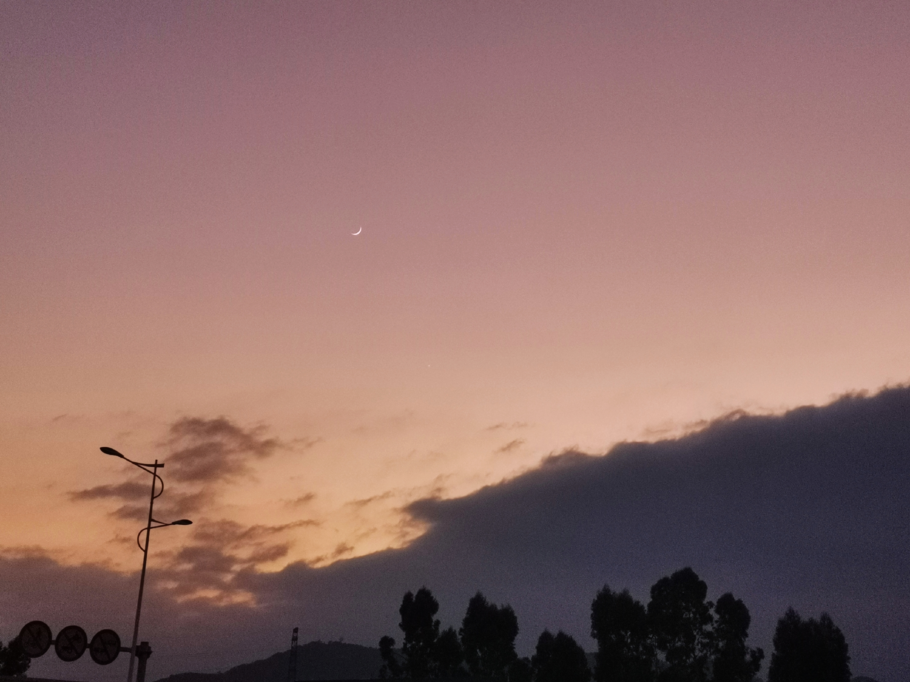
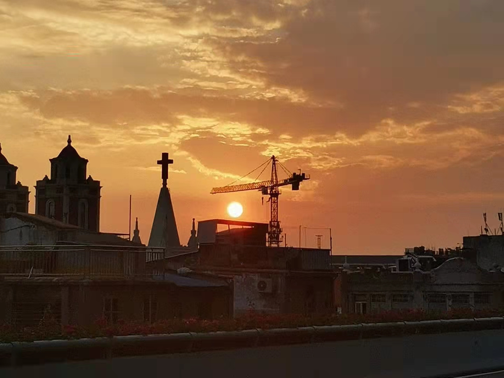
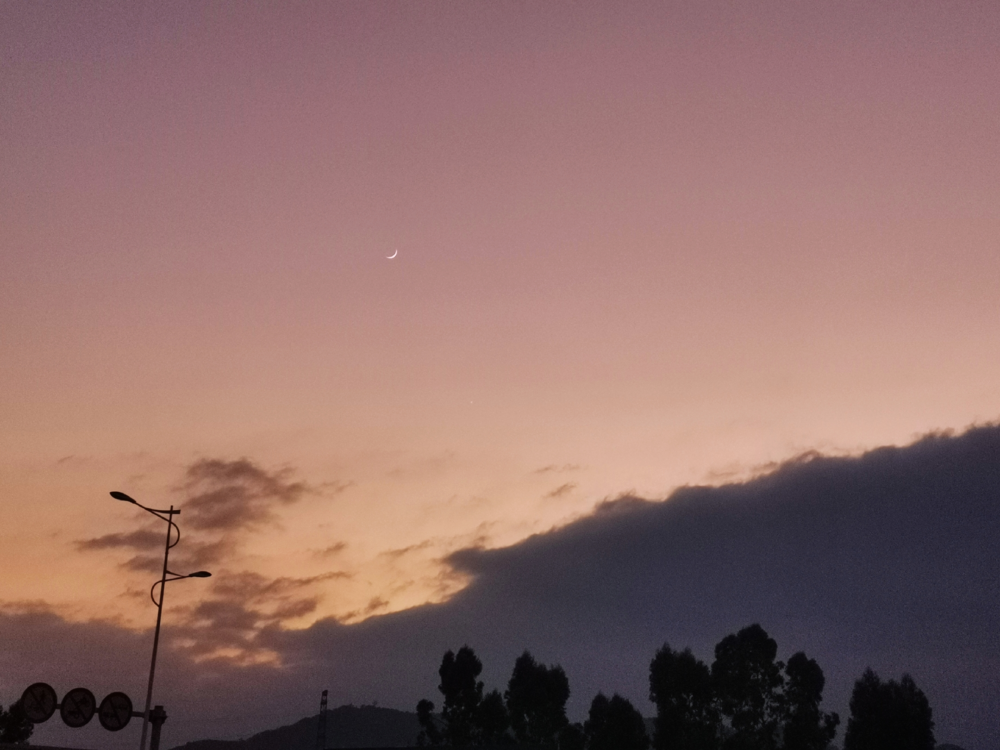
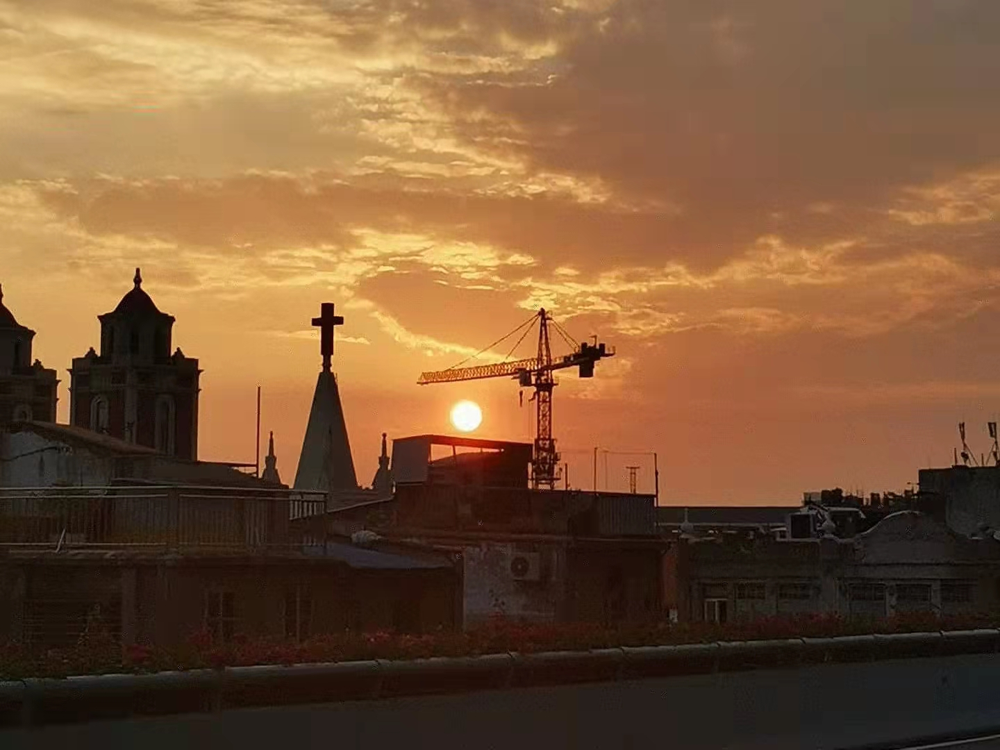

“压力面前保持优雅”——哥谭
Grace under pressure.
大家好，我是来自厦门大学嘉庚学院国际商务学院19级市场营销专业的学生。我叫赖似莹，我的家乡是漳州平和，一个被誉为“世界柚都”的地方。
我是一个比较慢热的人，平时不上课的时候，喜欢听听歌、追追剧，我也喜欢拍照，虽然没有专业的拍照设备，但是我觉得这并不影响我发现生活中的美。下面是我平时用手机拍的照片，虽然后期有修图，不过大致都只是加强了颜色饱和度，不会过度P图，因为我更喜欢保留照片的真实感。
 





平时我还喜欢和朋友打王者，闲暇时光还喜欢画画，是个比较懒惰、偶尔艺术的生活家。